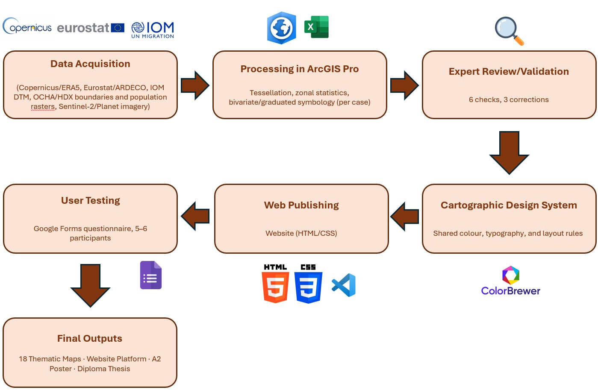

Diploma Thesis
Geovisual Storytelling of Climate-Induced Migration Patterns in Urban Environments
A dual-pace geovisual storytelling platform comparing slow-onset drought migration across Europe (2015 to 2024) with rapid-onset displacement in Southern Malawi following Tropical Cyclone Freddy (2023).
Objectives
“The objective of this thesis is to design a set of maps and non-spatial data visualisations forming a storytelling platform presenting migration trends driven by climate stressors. The student will investigate available data sources, with particular attention to those provided by programmes such as COPERNICUS.” Source: Assignment of Diploma Thesis (PAAV)
This thesis illustrates how geovisual storytelling methods can be designed to communicate the patterns and spatial dynamics of climate-induced human displacement to urban planners and policy makers. Two contrasting case studies are compared: slow-onset migration across urban regions of Europe, driven by cumulative drought stress, and rapid-onset displacement in southern Malawi following Tropical Cyclone Freddy. A multi-technique cartographic map suite is produced using ArcGIS Pro and assembled into this website. The resulting platform is descriptive by design: it visualizes where and how severely climate-related displacement patterns occur, without asserting a causal relationship between climate stress and migration.
Methods and Workflow
Data Sources
- Copernicus Climate Data Store & Land Monitoring Service
- Eurostat & ARDECO
- IOM Displacement Tracking Matrix
- OCHA / Humanitarian Data Exchange
- Sentinel-2 & Planet imagery
Software
- ArcGIS Pro: all cartographic processing and design
- QGIS: data integrity checks
- Google Forms: user-testing questionnaire
- Canva: A2 poster design
Cartographic Techniques
- Graduated symbols (Wurman dots)
- Choropleth mapping (annual sequence)
- Bivariate colour matrices
- Origin-destination flow mapping
- Rule-based regional typology

A consistent cartographic design system, combining a shared colour palette, typography, and layout grid, is applied within each case study, with a deliberate, explained register shift between the Europe and Malawi maps, reflecting that slow-onset and rapid-onset displacement are genuinely different phenomena. The 18 finished maps are exported from ArcGIS Pro and presented below in the same sequence as the thesis chapters.
Map Outputs
Click any map to open a larger version. Full-resolution appendix exports are included in the thesis attachments. Prefer a guided walkthrough instead of browsing freely? Read the maps as one connected story →
Europe Case Study: Slow-Onset Migration (2015 to 2024)


Malawi Case Study: Rapid-Onset Displacement (2023)


{kind=link}
{kind=link}
{kind=link}
{kind=link}
{kind=link}
{kind=link}
{kind=link}
{kind=link}
{kind=link}
{kind=link}
{kind=link}
{kind=link}
{kind=link}
{kind=link}
{kind=link}
{kind=link}
{kind=link}
{kind=link}
Results
Read across the ten-year Demographic Heartbeat sequence, outgoing migration does not rise in the same year as either the 2018 or the 2022 drought shock identified in the Climate Stress Grid. A delayed rise appears only in 2019 to 2021, concentrated in a German Rhine-Main/Baden-Württemberg cluster of regions, but this window coincides with the COVID-19 pandemic and cannot be attributed to climate stress with confidence. The Typology of European Countries maps reinforce this same disconnect. In both 2018 and 2022, the type combining severe climate stress with continued high immigration is the most extensive category, concentrated in Spain and, increasingly by 2022, France. These regions remain attractive destinations even as their climatic condition worsens.
In the Malawi case, the Displacement Flow map shows large-volume origins concentrated in the flood-prone districts directly struck by Cyclone Freddy, with destinations clustering disproportionately around Blantyre. The Bivariate Susceptibility map shows demographic pressure and landslide risk co-occurring almost exclusively within Blantyre City’s informal hillside wards.
Read together, the two cases show that urban environments do not relate to climate-induced migration in a single way. In Europe, cities function predominantly as downstream destinations. In Malawi, the city is epicenter and destination at once. Urban exposure to climate-induced migration takes at least two structurally different forms, depending on whether the city sits downstream of, or directly within, the climate event’s footprint. No statistical or causal test is applied to either pattern; both are presented descriptively.
Contribution
This thesis contributes a sub-national, dual-pace (slow-onset vs. rapid-onset) geovisual storytelling platform, built from more than ten complementary ArcGIS Pro cartographic techniques, that shows where climate stress and migration/displacement patterns do and do not align, for planning and policy audiences, without claiming a causal relationship between them. It is a storytelling platform rather than a dashboard, unlike existing precedents such as the IOM’s Climate Mobility Impacts Dashboard, and it combines a deliberately diverse suite of cartographic and chart-based techniques within one coherent, consistently designed platform.
Contact
Demet Akbaba
Department of Geoinformatics
Paris-Lodron University Salzburg & Palacký University Olomouc
demet.akbaba@stud.plus.ac.at